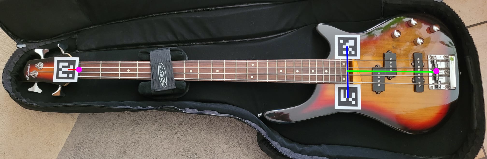

L'implementazione utilizza i 3 marker per individuare su che piano si trova orientato lo strumento, e permette di specificare un offset verso l'inizio e la fine delle corde (mostrati in verde e rosso in figura), in modo tale da trovare il centro di inizio e fine corde (mostrati con i punti fucsia); conoscendo la normale del piano sul quale giace il piano ho anche aggiunto la possibilita' di specificare offset verticali per i marker, in modo tale da allineare meglio i punti con i fret.
Ho provato anche a realizzare l'implementazione con 2 soli marker ma questa, per sapere su che piano si trova lo strumento utilizza i dati di orientamento dei marker, che non sono particolarmente affidabili a questa distanza, quindi secondo me 3 tracker sono il minimo per ottenere un tracciamento soddisfacente.
Ho realizzato qualche video per mostrare il funzionamento, non avendo il basso con me oggi ho aggiunto un modello placeholder per rappresentare la sezione di manico esteso per tutta la lunghezza delle corde, con i punti di intersezione corda/fret.